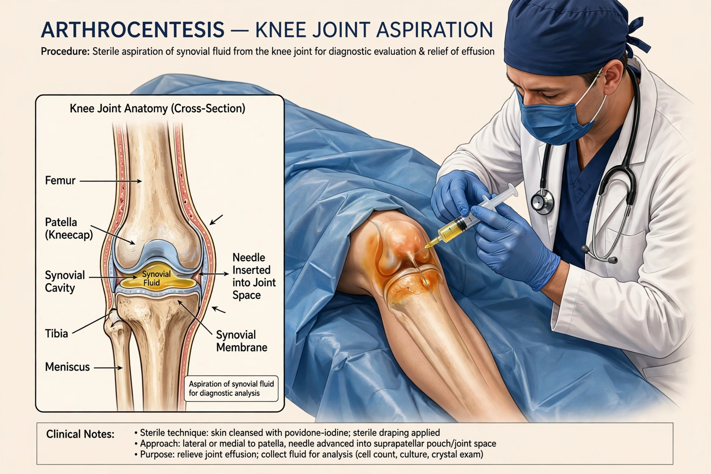

Arthrocentesis, also called joint aspiration, is a clinical procedure in which a sterile needle and syringe are used to collect synovial fluid from a joint, or to inject medication into it.

It is used to diagnose gout, pseudogout, septic arthritis and other inflammatory arthritides by analysing fluid for crystals, white cells, Gram stain and culture; to relieve pain from effusion or haemarthrosis; and to inject corticosteroids.
The skin is cleaned antiseptically, local anaesthetic may be used, and the needle is advanced into the joint space — most commonly the knee — sometimes with ultrasound guidance. Risks include infection, bleeding and pain.
See also: Allopurinol, Anterior cruciate ligament